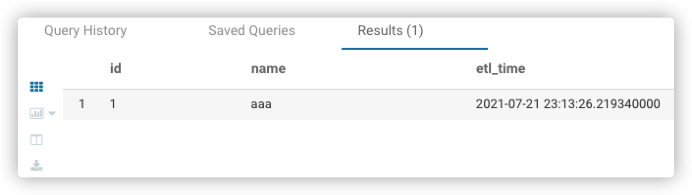
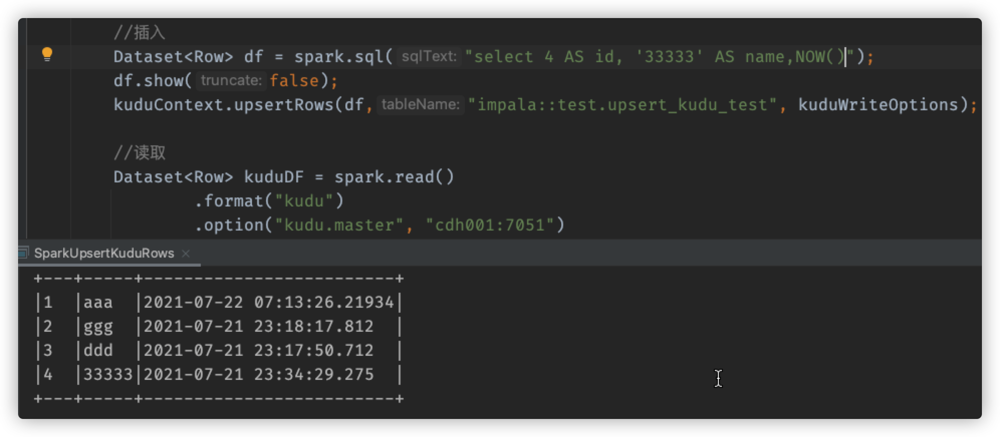
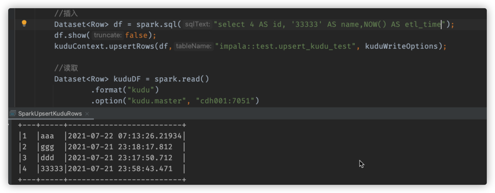

39. [Kudu]关于Kudu Upsert列的问题
今天做线索下发，涉及到spark修改kudu列的数据，发现了一个问题，kudu表中的数据始终没有被修改，于是晚间我在本地尝试着复现了一波，发现了一些问题，记录于此，明天去测试环境再测试一下。
补充：经过在测试环境的尝试(测试的集群环境的Kudu版本为1.9, 本地测试使用的是Kudu1.13的依赖包)，情况相同。
39.1. 需求起源
场景是这样的，需求是原先存在于kudu表中的数据，有一列为主键，当该列的数据发生更新之后，直接将该条数据upsert。
39.2. 复现
39.2.1. 建表
我在本地使用impala建了一个表，名为upsert_kudu_test
CREATE TABLE upsert_kudu_test(
id int,
name string,
etl_time TIMESTAMP,
PRIMARY KEY (id)
)
STORED AS kudu;
在kudu中其实际名为：impala::test.upsert_kudu_test
39.2.2. 插入数据
使用impala可以直接插入数据
INSERT INTO test.upsert_kudu_test VALUES(1, 'aaa',NOW());
没有问题，impala可以直接查询出来

可是，实际情况是，任务是使用Spark在集群环境中跑的，对于kudu中列数据的插入和修改都是通过spark来完成的，于是，我模拟在本地使用spark来插入和修改改表的数据，代码如下：
SparkSession spark = SparkSession.builder()
.master("local[4]")
.appName("UpsertKuduRows")
.getOrCreate();
KuduContext kuduContext = new KuduContext("cdh001:7051", spark.sparkContext());
KuduWriteOptions kuduWriteOptions = new KuduWriteOptions(false, false, false, false, false);
//插入
Dataset<Row> df = spark.sql("select 2 AS id, 'ggg' AS name, NOW() AS etl_time");
df.show(false);
kuduContext.upsertRows(df,"impala::test.upsert_kudu_test", kuduWriteOptions);
//读取
Dataset<Row> kuduDF = spark.read()
.format("kudu")
.option("kudu.master", "cdh001:7051")
.option("kudu.table", "impala::test.upsert_kudu_test")
.load();
kuduDF.createOrReplaceTempView("test_view");
spark.sql("select * from test_view").show(false);
此时，表中成功插入了一条id=2，name=ggg，etl_time=2021-07-21 23:18:17.812的数据
39.2.3. 出现问题
我开始思考我白天的时候为什么在upsert数据也就是更新数据的时候没有成功，我一开始以为是在创建KuduWriteOptions时，其第二个参数设置为true的原因，可是当我无论怎么设置它，都不太好使。
KuduWriteOptions holds configuration of writes to Kudu tables.
Params:
ignoreDuplicateRowErrors – when inserting, ignore any new rows that have a primary key conflict with existing rows
ignoreNull – update only non-Null columns if set true
repartition – if set to true, the data will be repartitioned to match the partitioning of the target Kudu table
repartitionSort – if set to true, the data will also be sorted while being repartitioned. This is only used if repartition is true.
handleSchemaDrift – if set to true, when fields with names that are not in the target Kudu table are encountered, the Kudu table will be altered to include new columns for those fields.
该参数名叫ionoreNull,尝试的过程中，尝试的过程中，我试着将etl_time直接不写，以为该数据就不会更新，可是结果出乎我意料，id=2的name成功更新了，etl_time却没有更新
1、原先数据为：
+---+-----+-------------------------+
|1 |aaa |2021-07-22 07:13:26.21934|
|2 |ggg |2021-07-21 23:18:17.812 |
|3 |ddd |2021-07-21 23:17:50.712 |
|4 |22222|2021-07-21 23:34:29.275 |
+---+-----+-------------------------+
2、我使用如下语句upsert
//插入
Dataset<Row> df = spark.sql("select 4 AS id, '33333' AS name");
df.show(false);
kuduContext.upsertRows(df,"impala::test.upsert_kudu_test", kuduWriteOptions);
此时数据变为
+---+-----+-------------------------+
|id |name |etl_time |
+---+-----+-------------------------+
|1 |aaa |2021-07-22 07:13:26.21934|
|2 |ggg |2021-07-21 23:18:17.812 |
|3 |ddd |2021-07-21 23:17:50.712 |
|4 |33333|2021-07-21 23:34:29.275 |
+---+-----+-------------------------+

可以观察到，name变了，可是时间却没有变，好家伙，继续尝试，将etl_time加上，可是这次不写AS etl_time
3、使用如下代码插入数据
//插入
Dataset<Row> df = spark.sql("select 4 AS id, '33333' AS name,NOW()");
df.show(false);
kuduContext.upsertRows(df,"impala::test.upsert_kudu_test", kuduWriteOptions);
此时数据变为：
+---+-----+-------------------------+
|1 |aaa |2021-07-22 07:13:26.21934|
|2 |ggg |2021-07-21 23:18:17.812 |
|3 |ddd |2021-07-21 23:17:50.712 |
|4 |33333|2021-07-21 23:34:29.275 |
+---+-----+-------------------------+

可以观察到，etl_time这个字段的值，并没有发生改变
4、接着尝试，这次将AS etl_time加上
得到结果如下：
+---+-----+-------------------------+
|1 |aaa |2021-07-22 07:13:26.21934|
|2 |ggg |2021-07-21 23:18:17.812 |
|3 |ddd |2021-07-21 23:17:50.712 |
|4 |33333|2021-07-21 23:58:43.471 |
+---+-----+-------------------------+

可以观察到，etl_time这个字段的值，这次改变了
39.3. 结论
在使用spark去upsert kudu列的时候，一定得讲SELECT得到的DF每个字段加上该列的名字，即加上
AS COLUMN_NAME，经过尝试不加
AS COLUMN_NAME，kudu无法识别，不会进行更新，同时也不会报错加上了
AS COLUMN_NAME，但是COLUMN_NAME错了，Kudu则会报错
Kudu是列式存储